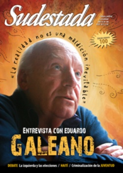

Buscar
En la fragua de los versos
La historia de dos compañeros de vida y de lucha, donde se mezclan yunques, martillos, poesía y desaparición. Nelly y Dardo Dorronzoro: poemas contra el olvido. por Mariano Garrido
Edición N° 100
Julio 2011
Revista bimensual
Comprar edición impresaSumario
- "La realidad es más poderosa que las voces que la interpretan"
- Cien veces no debo
- La izquierda ante el desafío electoral
- El estigma de los olvidados
- Haití, un pueblo que resurge de los escombros
- La manía de no callar
- En la fragua de los versos
- Museo a cielo abierto
- Los ojos de Palestina
Compartir Articulo
El grupo entra a la casa del barrio La Loma. Los tipos llevan capuchas. Los tipos entran a las patadas. Como suele pasar, los tipos van rompiendo objetos o huesos a su paso. La casa del escritor y herrero no es una casa rica. (La calle es de tierra; el barrio, en los arrabales de Luján). El grupo que arrastra al poeta hacia fuera, para llevárselo en la noche de aquel marzo, se entretiene antes de la partida realizando inscripciones fascistas en las paredes y en la entrada de la casa. Componen la patota los miembros del Regimiento 6 de Infantería de Mercedes. (Nadie pida sensibilidad; ninguno pretenda clemencia). Operan extraoficialmente bajo el nombre de "Comando Bruno Genta" en tributo a un escritor ajusticiado, tan extravagante como anticomunista, perteneciente a la derecha católica argentina.
Los tipos salen. Se llevan con ellos a través de la noche de aquel 10 de marzo del 76 al poeta y herrero Dardo Dorronzoro. Quedan en su casa el tendal de objetos destruidos, las pintadas como recordatorio del ultraje. Y queda, llorando en un rincón, sacándose la capucha que los verdugos le pusieron, Nelly, su compañera. Llora por la suerte de su esposo. No sabe todavía que Dardo regresará con vida de aquel secuestro. Y mucho menos que aquellos tipos también regresarán.
Nelly Dorronzoro se llama la mujer que vive allí, en esa casa de Luján. Lleva el mismo apellido que porta su compañero Dardo. No se trata del gesto atávico y señorial de considerar a la mujer como propiedad de. Ocurre que Nelly y Dardo son familia desde antes de haberse casado. Fueron primos; después, amigos. Más tarde pareja, luego lo demás. Se casaron siendo grandes, con más de cincuenta años. (Los diez que él le llevaba no parecían notarse). Ella daba clases en distintas escuelas; él trabajaba en la herrería medio día, y otro medio escribía: conformaban un hogar que no estaba destinado a la abundancia económica ("...el pan con una forma determinada, más bien poco, más/ bien caro..."), pero donde no faltaba lo necesario para atender a amigos y jóvenes que pasaban de visita, y amparar y alimentar a una cofradía de perros y gatos. ("Los miércoles eran días nublados generalmente,/ y generalmente llovía los jueves pero nada más que en las/ calles de tierra,/ por donde me llegaban los gatos/ con las patas embarradas..."). Los dos poseían una vida cultural e intelectual amplia. Ella trabajaba en la Escuela Normal como profesora de Lengua y formando docentes en el Instituto del Profesorado de Mercedes. Él publicaba artículos en periódicos diversos; había escrito una novela, premio EMECÉ en 1964, La nave encabritada, y la poesía era una actividad regular. El hogar de ambos era frecuentado por jóvenes que discutían de literatura y de política ("...y enseguida nos poníamos a hacer la revolución debajo de/ las ramas,/ debajo de ese vientito fresco con/ madreselvas,/ pero la cuestión era difícil porque no estabas..."). Su casa taller terminó por transformarse en un espacio donde hallaban cabida los muchachos con inquietudes, que ambos se encargaban de alimentar.
(La nota completa en la edición gráfica de Sudestada Nº 100 - julio 2011)
Comentarios
Mariano Garrido
Articulos más vistos


LIBRERÍA SUDESTADA

Colección infantil

Distribuidora de Libros

Suscripción

Sudestada en URUGUAY

Otros articulos de esta edición
Museo a cielo abierto
Para el que mira sin ver, la feria de Solano es feria, nomás. Pero hay que dejar de lado los ...
 Entrevista con Eduardo Galeano
Entrevista con Eduardo Galeano
"La realidad es más poderosa que las voces que la interpretan"
Desde una mirada profundamente latinoamericanista, y con un mítico café de Montevideo como telón de fondo, Eduardo Galeano recorre el ...
 Criminalización de la pobreza y la juventud
Criminalización de la pobreza y la juventud
El estigma de los olvidados
En una sociedad que los ve, pero no los tolera, y con un Estado prácticamente inexistente, los jóvenes están en ...
La izquierda ante el desafío electoral
Mientras para algunos se trata de una prioridad dentro de su agenda política, para otros apenas se asoma como un ...
Cien veces no debo
Somos de Lomas de Zamora. Aquí arrancamos con este colectivo de papel; ahí nos conocimos una década atrás en el ...
 Entrevista: Cuatro pesos de propina
Entrevista: Cuatro pesos de propina
La manía de no callar
Se hacen llamar Cuatro pesos de propina, son uruguayos y, detrás de La vela puerca y No te va a ...